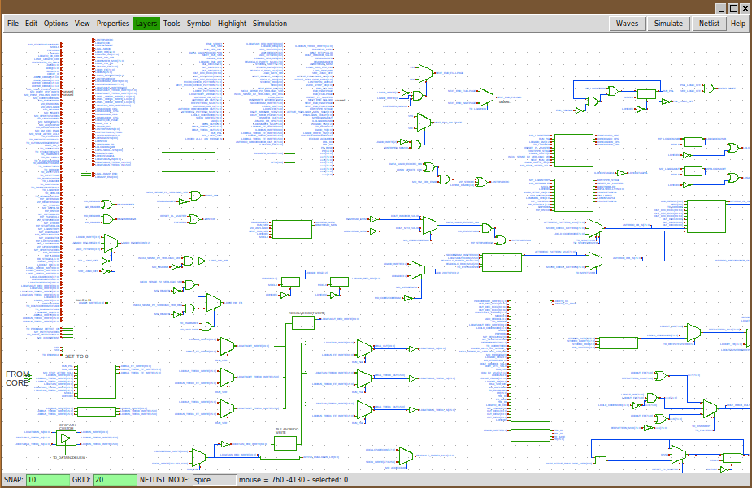
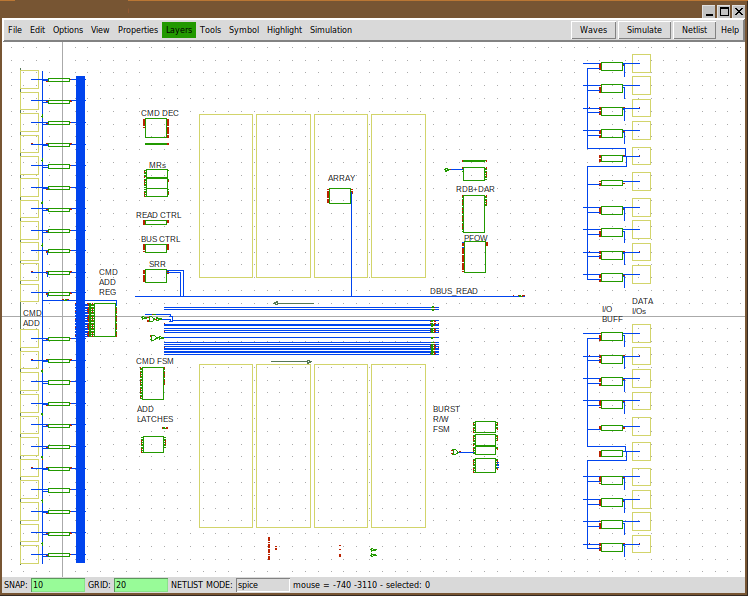

PREV
UP
NEXT
CONCLUSIONS
- A Free and Open Source (GNU GPL v2) solution for VLSI and complex circuit descriptions.
- Designed to be efficient, fast and small.
- Complex mixed mode (digital / analog) systems have been succesfully created and simulated.
- True hierarchic schematic description, with parametric components.
- Full support for vector buses, bus rippers and vector instances.
- ASCII output file format, simple and documented.

